Regression comparison
Download resultsAggregation weights
Coefficients can be negative and need not sum to one. Intervals describe coefficient uncertainty; the dashed reference is DE’s fixed 1/H weight.
BDKN
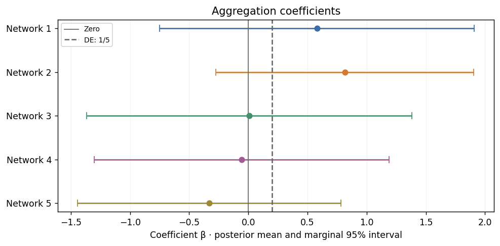

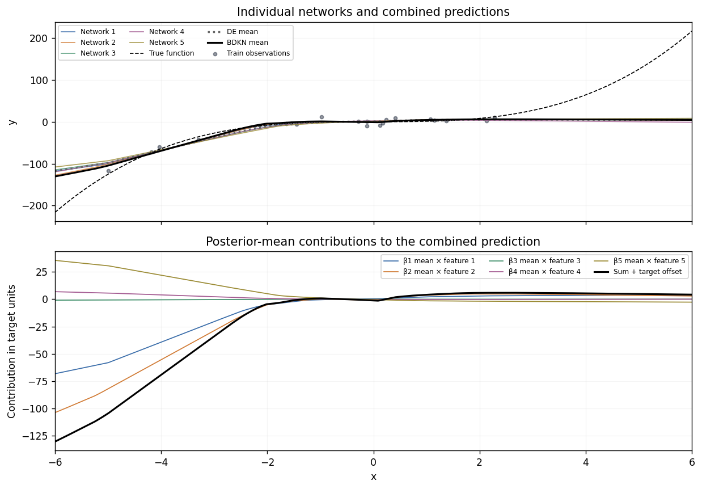
Each density panel uses its own X range for readability; coefficient intervals above share a common axis. Prior reference conditions on fitted noise. Contribution shares use held-out inputs; test targets are used only for scoring.
| Network | β mean | 95% low | 95% high | P(β > 0) | Contribution share | Test RMSE | Test NLL |
|---|---|---|---|---|---|---|---|
| 1 | 0.57940 | -0.75116 | 1.90995 | 0.81274 | 0.32283 | 58.66186 | 34.93753 |
| 2 | 0.81495 | -0.27511 | 1.90500 | 0.93272 | 0.45401 | 59.02336 | 73.59532 |
| 3 | 0.00756 | -1.36568 | 1.38079 | 0.50452 | 0.00423 | 59.41621 | 34.48789 |
| 4 | -0.05790 | -1.30481 | 1.18901 | 0.46190 | 0.03097 | 61.53888 | 39.27997 |
| 5 | -0.32976 | -1.44246 | 0.78294 | 0.27171 | 0.18796 | 59.14333 | 38.97010 |
Functional repulsion · BDKN
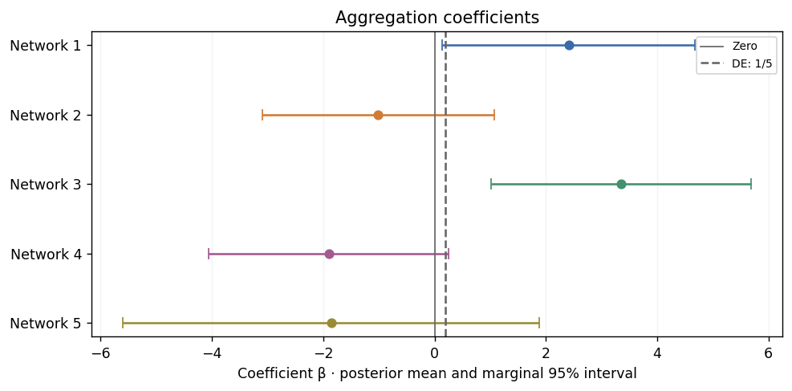
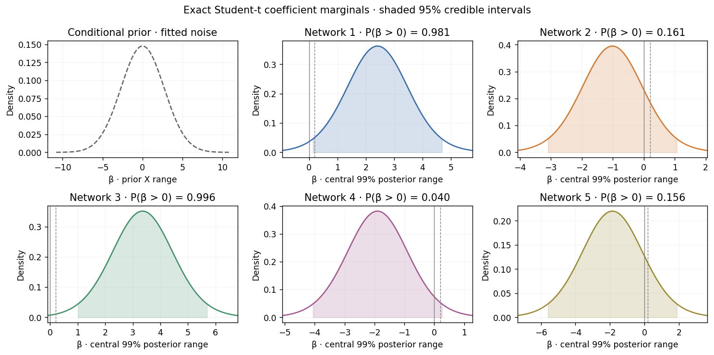
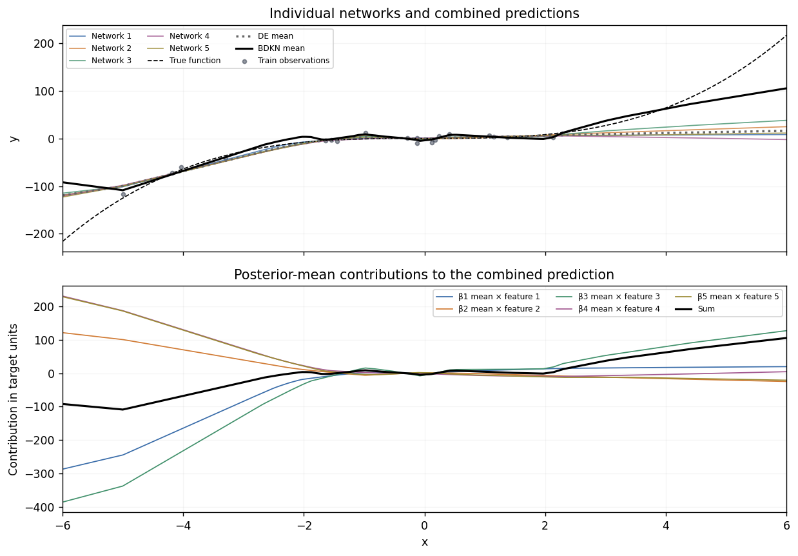
Each density panel uses its own X range for readability; coefficient intervals above share a common axis. Prior reference conditions on fitted noise. Contribution shares use held-out inputs; test targets are used only for scoring.
| Network | β mean | 95% low | 95% high | P(β > 0) | Contribution share | Test RMSE | Test NLL |
|---|---|---|---|---|---|---|---|
| 1 | 2.41197 | 0.14201 | 4.68193 | 0.98079 | 0.20847 | 58.04100 | 30.06281 |
| 2 | -1.01133 | -3.09232 | 1.06965 | 0.16140 | 0.10151 | 52.79166 | 32.99285 |
| 3 | 3.35269 | 1.01303 | 5.69235 | 0.99637 | 0.36459 | 48.70303 | 31371.62690 |
| 4 | -1.89885 | -4.05265 | 0.25496 | 0.04040 | 0.15697 | 61.44229 | 62.53911 |
| 5 | -1.85684 | -5.59613 | 1.88245 | 0.15632 | 0.16845 | 57.18310 | 155.94624 |
Weight repulsion · BDKN
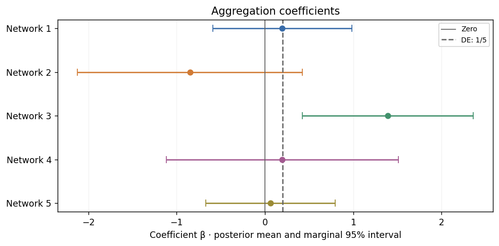
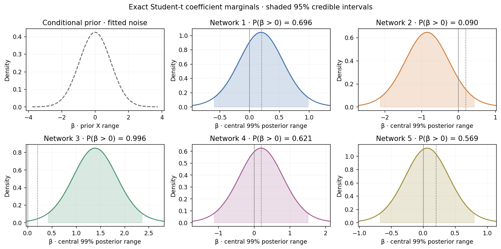
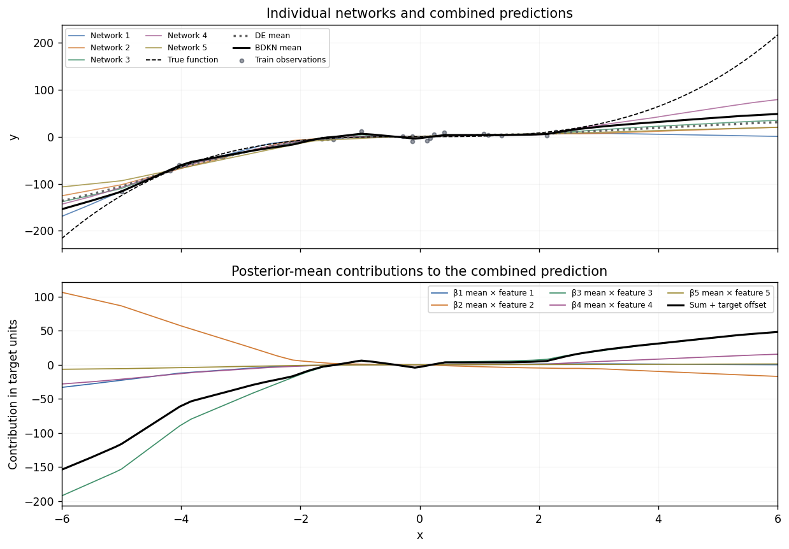
Each density panel uses its own X range for readability; coefficient intervals above share a common axis. Prior reference conditions on fitted noise. Contribution shares use held-out inputs; test targets are used only for scoring.
| Network | β mean | 95% low | 95% high | P(β > 0) | Contribution share | Test RMSE | Test NLL |
|---|---|---|---|---|---|---|---|
| 1 | 0.19620 | -0.59118 | 0.98358 | 0.69554 | 0.06328 | 57.86133 | 46.79536 |
| 2 | -0.84811 | -2.12120 | 0.42499 | 0.08996 | 0.27980 | 54.30561 | 35.55339 |
| 3 | 1.39228 | 0.42447 | 2.36009 | 0.99647 | 0.54161 | 47.95805 | 57.17060 |
| 4 | 0.19696 | -1.11636 | 1.51027 | 0.62118 | 0.09460 | 34.55276 | 13359.32514 |
| 5 | 0.06171 | -0.67048 | 0.79391 | 0.56890 | 0.02071 | 55.43852 | 50.46301 |
First-order repulsion · BDKN
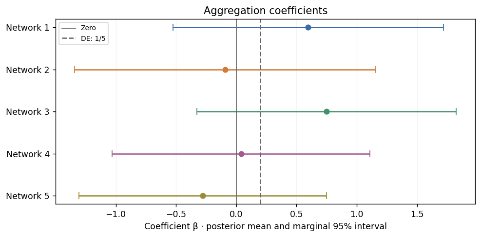
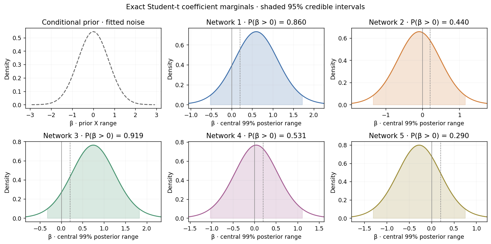
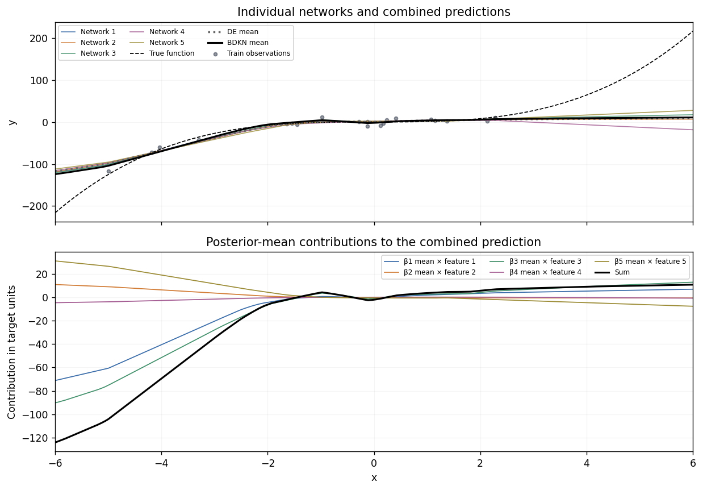
Each density panel uses its own X range for readability; coefficient intervals above share a common axis. Prior reference conditions on fitted noise. Contribution shares use held-out inputs; test targets are used only for scoring.
| Network | β mean | 95% low | 95% high | P(β > 0) | Contribution share | Test RMSE | Test NLL |
|---|---|---|---|---|---|---|---|
| 1 | 0.59643 | -0.52589 | 1.71875 | 0.85961 | 0.32230 | 56.88278 | 31.95125 |
| 2 | -0.09199 | -1.34045 | 1.15647 | 0.43969 | 0.04880 | 58.73550 | 32.09359 |
| 3 | 0.74866 | -0.32860 | 1.82593 | 0.91868 | 0.43594 | 54.97514 | 104.22529 |
| 4 | 0.04012 | -1.02926 | 1.10950 | 0.53080 | 0.02177 | 66.99754 | 34.92824 |
| 5 | -0.27768 | -1.30585 | 0.75050 | 0.28973 | 0.17118 | 52.79713 | 45.54465 |